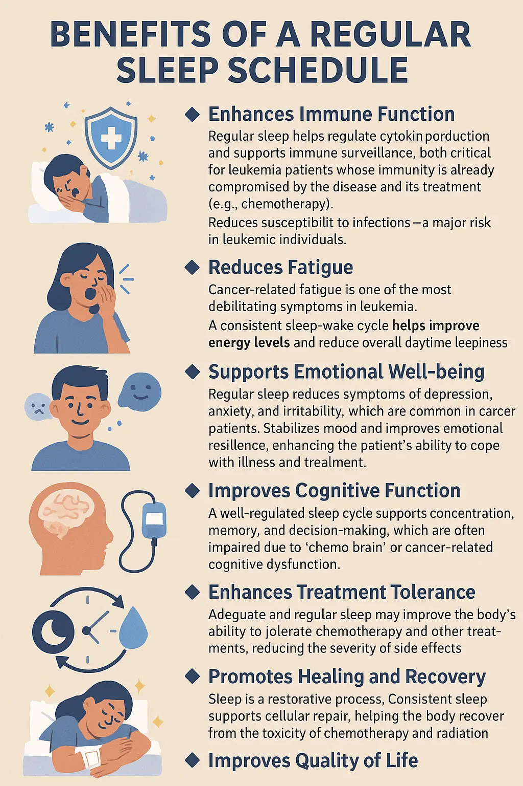
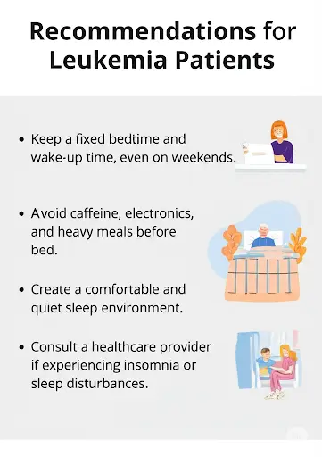
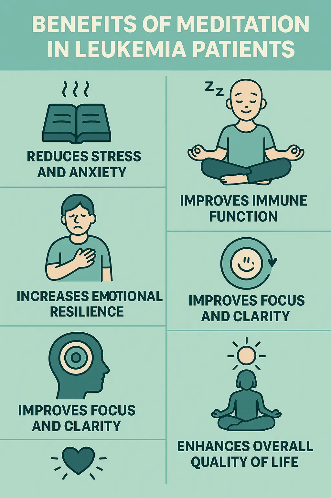

थकान प्रबंधन
⚠️ थकान होने पर तत्काल चिकित्सकीय सहायता लें यदि:
- अचानक या अत्यधिक थकान तेजी से बिगड़ रही हो
- थकान दैनिक गतिविधियों में बाधा डाल रही हो
- थकान के साथ सीने में दर्द, सांस फूलना, या चक्कर आना
- बुखार, ठंड लगना, या संक्रमण के लक्षण हों
- त्वचा पीली पड़ना, दिल की धड़कन तेज होना (एनीमिया का संकेत हो सकता है)
- अनुत्तरदायी होना, भ्रम, या बेहोशी
- आराम करने से भी थकान में सुधार न हो या यह कुछ दिनों से अधिक समय तक बनी रहे
शारीरिक गतिविधियाँ:
-
चलना -
वीडियो 4
- अवधि: 5-10 मिनट
- तीव्रता: मध्यम
- प्रत्येक 5-10 मिनट के बाद आराम करें; खुद पर ज़ोर न डालें
-
पैर घुमाना -
वीडियो
-
कलाई घुमाना -
वीडियो
-
टखने घुमाना -
वीडियो
-
कंधे उचकाना और घुमाना -
वीडियो
-
कोहनी मोड़ना और सीधा करना -
वीडियो
योग / प्राणायाम
-
अनुलोम विलोम (वैकल्पिक नासिका श्वास) -
वीडियो
-
कैसे करें:
- सीधी रीढ़ के साथ आराम से बैठें।
- अपनी दाहिनी नासिका को दाहिने अंगूठे से बंद करें।
- अपनी बाईं नासिका से धीरे-धीरे सांस लें।
- अपनी अनामिका उंगली से बाईं नासिका को बंद करें, दाहिनी नासिका को छोड़ें।
- दाहिनी नासिका से धीरे-धीरे सांस छोड़ें।
- फिर दाहिनी नासिका से सांस लें, उसे बंद करें, और बाईं ओर से सांस छोड़ें।
-
लाभ:
- तंत्रिका तंत्र को शांत करता है
- एकाग्रता और मानसिक स्पष्टता में सुधार करता है
- तनाव, चिंता और रक्तचाप को कम करता है
- मस्तिष्क के दोनों गोलार्धों (बाएं और दाएं) को संतुलित करता है
-
कैसे करें:
-
कपाल भाति (स्कल शाइनिंग ब्रेथ) -
वीडियो
-
कैसे करें:
- आरामदायक ध्यान मुद्रा में बैठें।
- गहरी सांस अंदर लें (सांस अंदर लेना निष्क्रिय होता है)।
- अपने पेट की मांसपेशियों को सिकोड़कर नाक से ज़ोर से सांस बाहर छोड़ें (सांस बाहर छोड़ना सक्रिय होता है)।
- प्रत्येक सांस छोड़ने के बाद स्वतः ही सांस अंदर लें। आमतौर पर यह प्रति मिनट 30-60 पंप के चक्रों में किया जाता है, जिसके बाद आराम और गहरी सांस ली जाती है।
-
लाभ:
- फेफड़ों और अंगों को विषमुक्त करता है
- पाचन और चयापचय को उत्तेजित करता है
- रक्त परिसंचरण में सुधार करता है
- शरीर और मन को ऊर्जावान बनाता है
- नाक के मार्ग और साइनस को साफ करता है
-
कैसे करें:
पोषण सहायता
अस्वीकरण: MedPANDA में दिए गए आहार संबंधी सुझाव सामान्य हैं। हमेशा अपने
आहार विशेषज्ञ की व्यक्तिगत सलाह का पालन करें।
- छोटे, बार-बार भोजन करें
- उच्च कैलोरी, प्रोटीन युक्त खाद्य पदार्थ: नट्स, पनीर, दही, अंडे, बीन्स, दाल

नियमित नींद का समय
रिकवरी और समग्र कल्याण का समर्थन करने के लिए प्रतिदिन 8 घंटे की नींद सुनिश्चित करें।


ध्यान वीडियो 7
बुनियादी चरण:
- एक शांत जगह चुनें
- आराम से बैठें या लेट जाएं
- अपनी आँखें बंद करें, गहरी सांस लें और आराम करें
- सांस पर ध्यान केंद्रित करें या मंत्र/विज़ुअलाइज़ेशन का उपयोग करें
- वर्तमान में रहें, बिना निर्णय के विचारों का निरीक्षण करें
- 5-10 मिनट से शुरू करें और धीरे-धीरे बढ़ाएं
- धीरे से समाप्त करें और स्ट्रेच करें

🧘 युक्तियाँ: लगातार रहें। धैर्य और अभ्यास सबसे महत्वपूर्ण हैं।
यदि मतली गंभीर है, तो तत्काल चिकित्सकीय ध्यान दें।